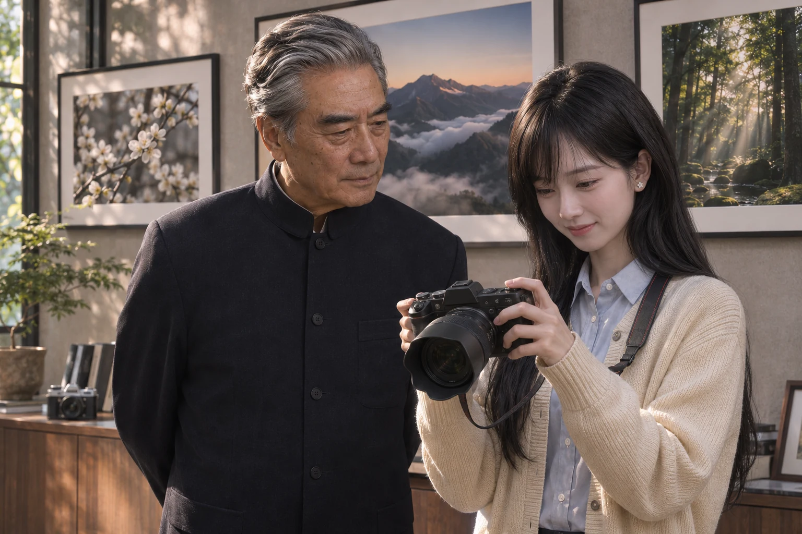
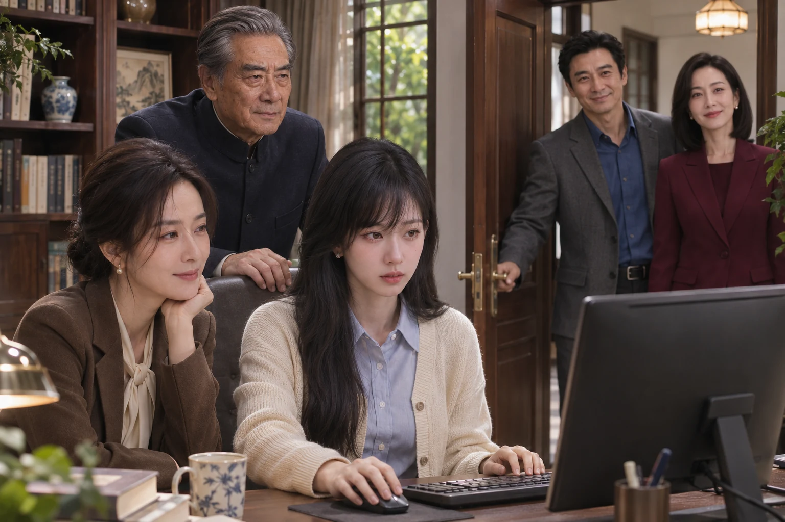

ตอนที่ 13
มั่นใจ
ของหวานทำให้คนเราอารมณ์ดีขึ้นอย่างเห็นได้ชัด ซ่งอวิ๋นเองก็เช่นกัน หลังจากทานไอศกรีมหมด อารมณ์หม่นหมองค่อย ๆ ทุเลาลง แม้ความหงุดหงิดใจยังหลงเหลือก็ไม่ส่งผลกระทบกับเธอมากเท่าไหร่นัก
หญิงสาวเดินเข้าแกลเลอรีส่วนตัว เพื่อเก็บกล้องและจัดการรูปที่เพิ่งถ่ายมาในวันนี้ แต่กลับพบว่าปู่ซ่งยืนเอามือไพล่หลังรออยู่
“คุณปู่?”
“อวิ๋นเอ๋อร์ เป็นยังไงบ้างวันนี้” ปู่ซ่งปรับสีหน้าให้อ่อนโยนลง
“ได้รูปมาเยอะเลยค่ะ แต่โดนขัดจังหวะนิดหน่อย ก็เลยกลับเร็วกว่าปกติ” ซ่งอวิ๋นคลี่ยิ้มจาง ๆ ชั่งใจอยู่ว่าควรเล่าเรื่องที่เกิดขึ้นให้คุณปู่ฟังหรือไม่ เกรงว่าท่านจะโกรธและไปตำหนิอาหญิงรอง
“อยากเล่าให้ปู่ฟังหรือเปล่า” ซ่งเต๋อถามทั้งที่ทราบอยู่แล้วว่าเกิดอะไรขึ้น
เนื่องจากเขาส่งบอดี้การ์ดตามดูแลหลานสาวอยู่ห่าง ๆ เพราะตอนสอบเกาเข่าวันแรกเขามองเห็นเจตนาไม่ดีจากซ่งหว่าน
“หนูเจอพี่รองกับซ่งหว่าน เหมือนว่าทัศนคติของหนูกับพี่รองไม่ตรงกันเท่าไหร่” ซ่งอวิ๋นตัดสินใจเล่าโดยไม่ลงรายละเอียด คุณปู่ฉลาดมาก ท่านคงเข้าใจเจตนาของเธอเป็นอย่างดี
“อยากให้ปู่ช่วยอะไรหรือเปล่า” ผู้เฒ่าซ่งโล่งใจที่หลานสาวไม่ปิดบังเขา แม้จะเล่าแบบไม่ลงรายละเอียด ก็ยังดีกว่าเก็บเรื่องต่าง ๆ ไว้คนเดียว
หญิงสาวรีบโบกมือปฏิเสธ “ไม่เป็นไรค่ะคุณปู่ ทัศนคติไม่ตรงกันก็ต่างคนต่างอยู่”
เธอไม่เห็นประโยชน์ใด ๆ หากต้องทำให้กลายเป็นเรื่องใหญ่โต เพราะตาชั่งในใจเขาเอนเอียงไปแล้ว การสร้างปัญหาให้อาหญิงรองหนักใจไม่ใช่สิ่งที่ควรทำ
“หลานรู้ใช่ไหม มีเรื่องอะไรปู่ช่วยได้เสมอ อย่าแบกรับความเจ็บปวดไว้คนเดียวเด็ดขาด” ซ่งเต๋อเข้าใจเจตนาของหลานสาว ตราบใดที่เธอยังไหว เขาจะคอยสนับสนุนจากด้านหลัง
แต่ขอแค่หลานสาวหันกลับมาพูดเพียงคำเดียวว่าไม่ไหว เขาพร้อมปกป้องทันที
ซ่งอวิ๋นเม้มปากตัวเองเบา ๆ มันสั่นระริกอย่างเห็นได้ชัด ในอกอุ่นซ่าน ความรู้สึกแย่ ๆ ก่อนหน้านี้หายเป็นปลิดทิ้ง
“หนูจะบอกคุณปู่แน่นอนค่ะ”
“ดีมาก ไหนเอารูปให้ปู่ดูหน่อย หลานถ่ายอะไรมาบ้าง” ซ่งเต๋อสบายใจขึ้นมาก จึงเบี่ยงประเด็นไปถามเรื่องอื่นแทน

ส่วนที่ว่าเขาจะจัดการเจียงเซินอย่างไร ก็ต้องดูว่าลูกสาวของเขาคิดยังไงกับเรื่องนี้
…
ซ่งเซียงเข้าบริษัทตั้งแต่เช้าดังเช่นทุกวัน แต่สีหน้าหญิงวัยกลางคนดูไม่สู้ดีเท่าไหร่นัก พอเจอหน้าน้องชายคนเล็ก ก็ตัดสินใจทานกาแฟด้วยกัน
“สวัสดีค่ะท่านประธาน สวัสดีค่ะกรรมการซ่ง” พนักงานทักทายผู้บริหารอย่างนอบน้อม แล้ววางกาแฟไว้บนโต๊ะ
“ขอบใจมาก” ซ่งเซียงยกกาแฟขึ้นจิบ คล้อยหลังพนักงาน ซ่งเซวียนก็ถามไถ่พี่สาวอย่างเป็นกังวล
“มีอะไรหรือเปล่าพี่รอง สีหน้าพี่ดูเครียดมากเลย”
“เจ้ารองก่อเรื่องแล้วน่ะสิ” ซ่งเซียงบอกเล่าเรื่องราวทั้งหมดให้น้องชายฟัง เมื่อเช้าพ่อเพิ่งบอกเธอ
แน่นอนท่านไม่ได้ต่อว่าเธอตรง ๆ เพียงเล่าให้ฟังว่าเจียงเซินต่อว่าซ่งอวิ๋นอย่างไรบ้าง และกล่าวทิ้งท้ายว่าท่านไม่เคยตีกรอบและให้หลานทุกคนมีความคิดเป็นของตัวเองได้เสมอ แต่คิดก็ส่วนคิด ไม่ควรนำความคิดด้านลบไปตัดสินคนอื่น
“เท่าที่ฟังมา ผมก็ไม่เห็นด้วยกับเจ้ารองจริง ๆ นะครับพี่รอง เข้าใจว่าเจ้ารองเห็นใจซ่งหว่าน แต่ถ้าเสี่ยวอวิ๋นยังรับไม่ได้ ก็ไม่ควรบังคับหรือตัดสินว่าอาอวิ๋นใจแคบ”
“พี่ก็คิดแบบนั้น ถึงได้เครียดอยู่ตอนนี้ พี่ควรพูดยังไงให้ความสัมพันธ์ของอาเซินกับเสี่ยวอวิ๋นไม่แย่ลงกว่าเดิม แค่ที่เป็นอยู่ตอนนี้ก็แทบกู่ไม่กลับแล้ว ถ้าเตือนตรง ๆ เดี๋ยวอาเซินก็จะคิดว่าเสี่ยวอวิ๋นมาฟ้องผู้ใหญ่”
“ยากจริง ๆ” ซ่งเซวียนขมวดคิ้วเข้าหากันเป็นปม “ถ้าเป็นผมอาจไม่พูดถึงเรื่องนี้ตรง ๆ แต่จะเตือนอ้อม ๆ มากกว่า”
“เดี๋ยวพี่จะลองดู ขอบใจนะน้องสาม” ซ่งเซียงโล่งใจขึ้นเมื่อได้ระบายมันออกมา เธอจะลองกลับไปทำตามที่น้องชายแนะนำ
“แต่พี่รองต้องระวังหน่อยนะครับ ไม่รู้ซ่งหว่านพูดอะไรบ้าง เจ้ารองถึงได้มองซ่งอวิ๋นในแง่ร้ายแบบนั้น”
“นั่นแหละประเด็น พี่เองก็สงสัยเหมือนกัน”
ความสงสัยนี้ได้คำตอบหลังจากนั้นไม่กี่วัน เมื่อซ่งเซียงถามขึ้นกลางโต๊ะอาหารเย็น
“ช่วงนี้อาเซินกลับบ้านช้า แอบไปมีแฟนหรือเปล่าเราน่ะ” เธอถามทั้งที่รู้คำตอบอยู่ในใจ
ช่วงนี้ลูกชายเธอไปอุดหนุนร้านขนมที่ซ่งหว่านไปทำงานพาร์ทไทม์แทบทุกวัน กว่าจะกลับถึงบ้านก็มืดค่ำ วันนี้ดีหน่อย เธอขอให้เขากลับบ้านเร็ว จึงมีโอกาสเลียบเคียงถาม
“เปล่านะครับแม่ ผมไปช่วยอุดหนุนน้องสาม ขนมร้านที่น้องสามทำงานอยู่อร่อยมากเลย” เขาตอบไม่เต็มเสียง เฝ้าดูอากัปกิริยาของมารดา เห็นท่านนิ่งเฉยไม่พูดอะไร เขาก็เบาใจลง
ทว่าคนที่ถามเขาอย่างฉงนกลับเป็นพี่ชายคนโต
“น้องสามไปทำงานพิเศษตั้งแต่เมื่อไหร่ ทำไมตัวเล็กไม่เคยเล่าให้ฉันฟัง?” เจียงซูเข้าใจว่าน้องชายหมายถึงซ่งอวิ๋น จึงออกอาการสงสัยแกมประหลาดใจ
“เปล่า หมายถึงอาหว่านต่างหาก น้องน่าเห็นใจ นิสัยดีมาก” เขายังเหล่ตามองมารดาอีกครั้ง เห็นท่านทานอาหารนิ่ง ๆ จึงใจชื้นกว่าเก่า
“ผ่านมาเกือบสองอาทิตย์ ไปนับพี่นับน้องกับซ่งหว่านแล้วเหรอ?” เจียงซูหัวคิ้วกระตุก ไม่พอใจที่อีกฝ่ายเรียกซ่งหว่านว่า ‘น้องสาม’ โดยไม่ถามความสมัครใจจากคนอื่น ๆ ก่อน
“ทำไมล่ะ อาหว่านจิตใจดีแถมขยันมากเลยนะ ถึงจะมีเงินเก็บแต่ไม่ขี้เกียจเลย ทำงานตัวเป็นเกลียว อาอวิ๋นไม่เคยทำอะไรแบบนี้เลยด้วยซ้ำ”
เคร้ง!
เสียงกระแทกช้อนส้อมลงบนจานกระเบื้องดังขัดน้ำเสียงโกรธแกมดูแคลนของเจียงเซิน ซ่งเซียงตวัดสายตาดุดันใส่ลูกชายคนเล็ก
“แกมีความคิดแย่ ๆ กับอวิ๋นเอ๋อร์ตั้งแต่เมื่อไหร่ แม่ไม่เคยตีกรอบและไม่ได้ห้ามถ้าแกจะเห็นใจซ่งหว่าน แต่แกไม่ควรมีความคิดแย่ ๆ กับเสี่ยวอวิ๋น เมื่อกี้แม่ได้ยินแกบอกว่าอวิ๋นเอ๋อร์ไม่เคยทำงาน แล้วแกทำเหรอ ถ้าตัวเองยังทำไม่ได้ กล้าชี้นิ้วต่อว่าคนอื่นได้ยังไง”
ซ่งเซียงร่ายยาว ในน้ำเสียงไร้ความโกรธเคือง มันราบเรียบประหนึ่งผิวน้ำนิ่ง แต่ทำให้ลูกชายหนาวสันหลังและอ้าปากค้าง
“ผมไม่ได้..”
“แกทำแบบนี้แม่บอกทุกอย่าง” เจียงซูเข่นเขี้ยวเคี้ยวฟัน “แกอาจไม่รู้ตัวว่าท่าทางที่แกพูดถึงเสี่ยวอวิ๋น มันดูถูกน้องขนาดไหน”
“ผมแค่พูดความจริง” เจียงเซินกำหมัดแน่น “อะไร ๆ ก็เสี่ยวอวิ๋น ทุกคนเอาอกเอาใจจนอาอวิ๋นเสียคนแล้ว”
“แล้วมันผิดยังไง?” ซ่งเซียงใช้ผ้าเช็ดปาก
“แม่หมายถึงอะไรครับ”
“ฉันถามว่า ถ้าทุกคนเอาใจเสี่ยวอวิ๋นแล้วมันผิดตรงไหน เสี่ยวอวิ๋นเกิดมาอย่างถูกต้อง พ่อแม่แต่งงานและมีทะเบียนสมรส ไม่ได้เกิดมาจากความสัมพันธ์รักกินขโมยกิน ทำไมเสี่ยวอวิ๋นถึงไม่ควรได้รับการเอาใจใส่”
“…” เจียงเซินน้ำท่วมปาก แม่พูดถูก มันเป็นสิ่งที่ซ่งอวิ๋นควรได้รับ ทว่าในใจเขายังสงสารซ่งหว่านมากกว่าอยู่ดี
“ถ้าจู่ ๆ พ่อของแกเอาลูกชู้เข้ามาในบ้าน แล้วบอกให้แกญาติดีกับลูกชู้ ถึงวันนั้นแกอาจเข้าใจขึ้นมาบ้าง”
ซ่งเซียงพูดเปรียบเปรย แต่ไม่นึกเลยว่ามันคือการทำนายอนาคตอันใกล้ของตัวเอง ในขณะที่เจียงเซินส่ายศีรษะ
“ไม่มีทางหรอกครับ พ่อของพวกเราไม่ได้มักมากเหมือนลุงใหญ่”
เจียงซูยกมือนวดขมับ น้องชายของเขาหัวอ่อน ขี้สงสาร และยึดมั่นในความคิดตัวเองมากเกินไป หากปักใจเชื่ออะไรไปแล้ว ต่อให้พูดตักเตือนด้วยไม้อ่อนและไม้แข็งไปเท่าไหร่ก็ป่วยการ จนกว่าจะเจอกับตัวเอง
…
เข้าสู่สัปดาห์สุดท้ายปลายเดือนหก เป็นช่วงเวลาที่ผู้เข้าสอบเก่าเขาลุ้นระทึกที่สุด เพราะมันคือช่วงเวลาประกาศผลสอบ อนาคตจะรุ่งโรจน์หรือดิ่งลงเหวก็ตัดสินกันในตอนนี้
วันนี้ท่านผู้เฒ่าซ่งและโจวจิ่วลุ้นผลสอบพร้อมซ่งอวิ๋น พวกเขาไม่อยากให้ซ่งอวิ๋นกดดัน จึงชวนคุยเรื่องขำขัน สร้างบรรยากาศรื่นเริงภายในห้องคอมพิวเตอร์
ผ่านมาสามสัปดาห์ตั้งแต่เกิดเรื่อง สภาพจิตใจของสองแม่ลูกค่อย ๆ ดีขึ้นตามลำดับ ซ่งเหวินยังวนเวียนสร้างความลำบากใจให้อยู่หลายครั้ง โจวจิ่วใช้ความอดทนอย่างถึงที่สุด เพราะการหย่าและการแบ่งสินสมรสกำลังจะเสร็จสิ้นแล้ว
“อาสามกับอารองยังมาทันสินะ” ประตูห้องคอมส่วนตัวของซ่งอวิ๋นเปิดกว้าง ซ่งเซวียนเดินนำพี่สาวเข้าไปพร้อมรอยยิ้มอบอุ่น

“อาสาม อาหญิงรองสวัสดีค่ะ พี่ ๆ กับน้องสี่ไม่มาด้วยเหรอคะ” ซ่งอวิ๋นมองเลยไปทางด้านหลัง โล่งใจที่ไม่เห็นเจียงเซิน แต่ก็เสียดายที่วันนี้ไม่ได้เจอพี่ใหญ่กับน้องเล็ก
“เจ้าพวกนั้นบอกจะรอฉลองด้วยทีเดียว มั่นใจมาก ๆ ว่าผลสอบของเสี่ยวอวิ๋นต้องออกมาดีแน่ ๆ” ซ่งเซียงโน้มกายลงไปกอดหลานสาวจากทางด้านหลัง พลางหอมศีรษะซ่งอวิ๋นเบา ๆ ลึก ๆ แล้วเธอยังรู้สึกผิดกับสิ่งที่ลูกชายทำลงไป
“หนูมั่นใจว่าตัวเองต้องได้เป็นฮุ่ยหยวนแน่ ๆ” ซ่งอวิ๋นมั่นใจเต็มเปี่ยม เธอไม่หวังว่าจะได้เป็นจอหงวนหรอก แค่เป็นอันดับหนึ่งของเมืองหลวงก็พอแล้ว
“แต่อาสามคิดว่าหลานอาต้องคว้าอันดับหนึ่งของประเทศมาได้แน่ ๆ” ซ่งเซวียนนั่งลงข้างกายผู้เป็นพ่อ
ขณะที่ซ่งอวิ๋นกำลังลุ้นกับผลสอบเกาเข่า พี่สาวต่างแม่ของเธอก็กำลังรอเวลาประกาศผลสอบอยู่เช่นเดียวกัน
“อาหว่านหน้าซีดนะ ช่วงนี้ลูกพักผ่อนไม่พอใช่ไหม หรือกดดันมากเกินไป รู้สึกยังไงบอกพ่อได้เลยนะ” ซ่งเหวินถามอย่างใส่ใจ วันนี้บ้านกว้างขวางมีเจียงเซินมาเพิ่มอีกคน
หลานชายคนนี้เป็นหลานคนเดียวที่เขามองว่าอ่อนโยน และรู้จักเห็นอกเห็นใจผู้อื่นที่สุดแล้ว
“หนูกลัวจะทำได้ไม่ดีน่ะค่ะ” กล่าวออกไปเช่นนั้น แต่เธอมั่นใจว่าตนเองเอาชนะคุณหนูเหยียบขี้ไก่ไม่ฝ่ออย่างซ่งอวิ๋นแน่นอน